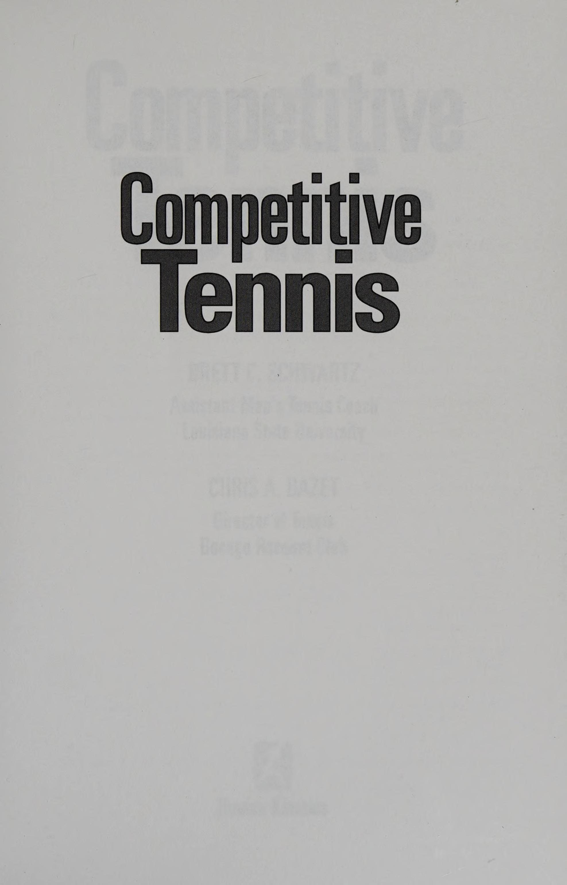
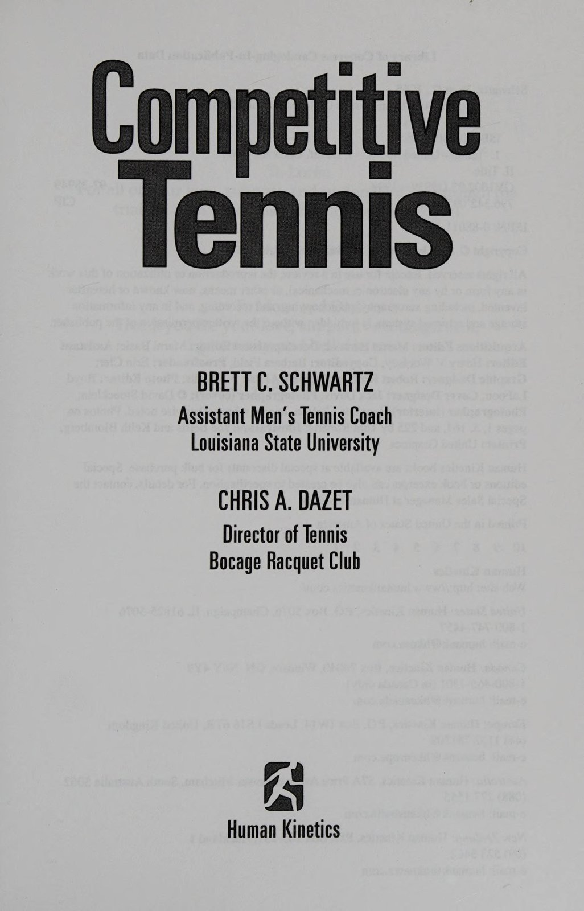
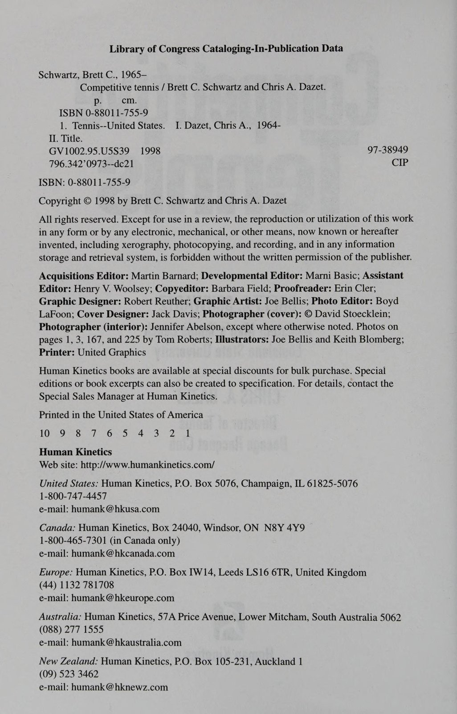
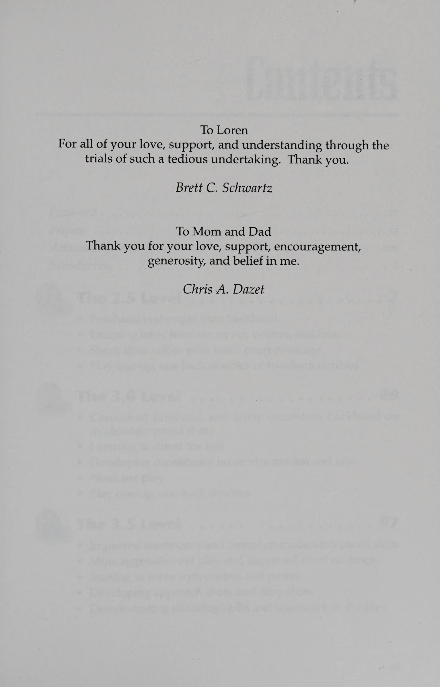
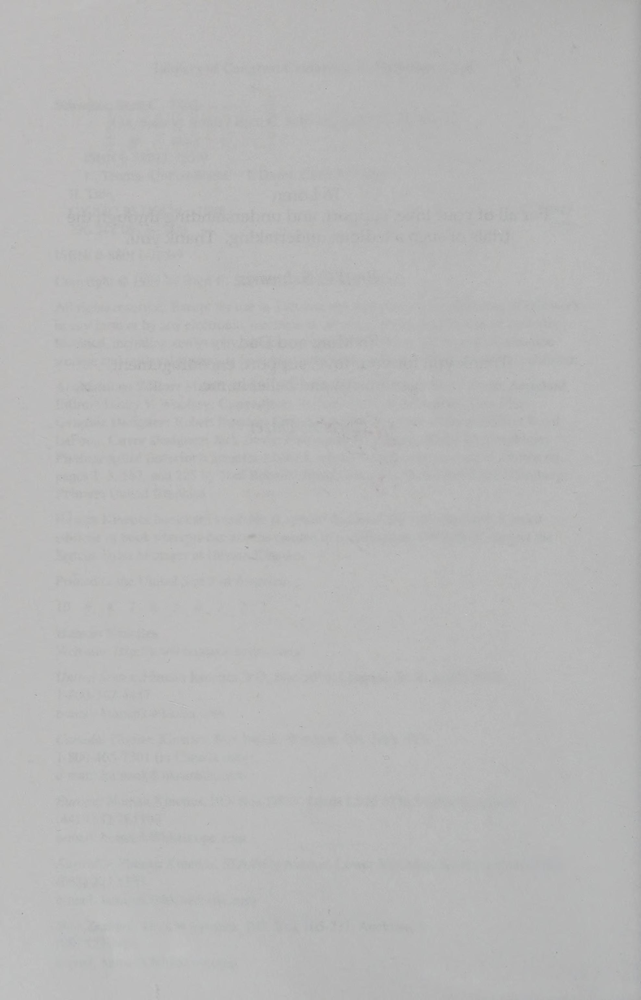
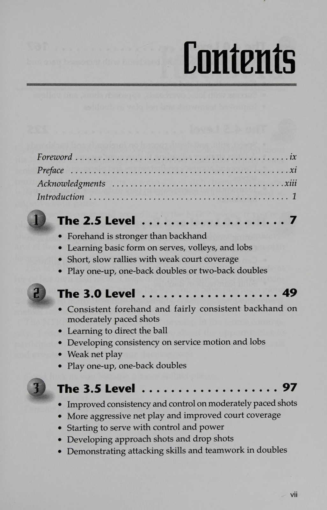

Phần 1: Bậc Thang NTRP & Bước Nhảy Vọt Từ Trình Độ 2.5 Lên 3.0
Cuốn sách Competitive Tennis: Climbing the NTRP Ladder của hai tác giả Brett C. Schwartz và Chris A. Dazet (do Human Kinetics xuất bản) là công trình hướng dẫn thi đấu có hệ thống bậc nhất dựa trên Chương trình Đánh giá Trình độ Quần vợt Quốc gia Hoa Kỳ (USTA NTRP). Trước khi hệ thống NTRP ra đời, việc phân loại người chơi chỉ mang tính cảm tính chung chung (như bảng A, bảng B). Với NTRP, mỗi tay vợt được đo lường chính xác trên thang điểm từ 1.5 đến 7.0, tạo ra một lộ trình thăng tiến rõ ràng cho mọi giải đấu câu lạc bộ và giải vô địch quốc gia.
Phần này phân tích cấu trúc của bậc thang NTRP, nhận diện những hạn chế cốt tử của trình độ 2.5 và cung cấp các bài tập then chốt giúp bạn bứt phá lên cột mốc 3.0 vững chắc.
1. Bậc Thang NTRP: Bản Đồ Phát Triển Quần Vợt Hiện Đại (The NTRP Ladder)
Hệ thống NTRP đánh giá người chơi dựa trên các chỉ số thực tế: Độ ổn định của cú đánh, khả năng kiểm soát độ sâu, độ xoáy, tốc độ bóng và tư duy chiến thuật dưới áp lực thi đấu:
- Trình Độ 2.5: Đã nắm được các kỹ thuật cơ bản nhưng các cú đánh chưa có tính nhất quán. Cú thuận tay thường vượt trội hơn hẳn cú trái tay. Các pha bóng qua lại thường ngắn, tốc độ chậm và người chơi thường lúng túng khi phải di chuyển rộng.
- Trình Độ 3.0: Đạt được độ ổn định tương đối ở các cú đánh chạm đất với tốc độ vừa phải. Bắt đầu kiểm soát được hướng bóng, biết cách đưa quả giao bóng hai vào sân an toàn và tự tin hơn khi lên lưới bắt volley.
- Trình Độ 3.5: Cột mốc bản lề của quần vợt phong trào. Người chơi bắt đầu kiểm soát được độ sâu và độ xoáy của quả bóng, biết cách khai thác điểm yếu của đối thủ và phối hợp ăn ý trong đánh đôi.
- Trình Độ 4.0: Sở hữu các cú đánh uy lực và có kiểm soát. Giao bóng có vị trí và độ xoáy rõ rệt, phòng thủ phản công linh hoạt và khả năng kết liễu điểm số trên lưới thành thạo.
- Trình Độ 4.5+: Đẳng cấp bán chuyên và chuyên nghiệp. Tốc độ bóng cao, thể lực vượt trội, biến ảo chiến thuật tức thì và tâm lý thi đấu thép.
2. Xóa Bỏ Điểm Yếu Cốt Tử Của Trình Độ 2.5

Để thoát khỏi vùng trũng 2.5, người chơi cần tập trung khắc phục ba rào cản lớn nhất:
- Khắc Phục Tử Huyệt Trái Tay: Người chơi 2.5 thường tìm mọi cách né trái để đánh thuận tay, làm lộ ra khoảng trống mênh mông trên sân. Hãy học cách sử dụng cú cắt bóng trái tay (slice) đơn giản với kiểu cầm Continental để đưa bóng qua lưới an toàn thay vì cố né bóng.
- Khắc Phục Thói Quen Đánh Bóng Vội Vã: Thay vì cố gắng quất mạnh để ghi điểm ngay ở quả bóng đầu tiên, hãy tập trung vào việc đưa bóng qua lưới cao hơn mép lưới 1 mét và nhắm sâu vào giữa sân đối phương.
- Khắc Phục Đôi Chân Bất Động: Luôn nhún tách chân (split-step) ngay khi đối phương chạm bóng để cơ thể không bị chôn chân tại chỗ.
Cùng bạn tập đứng ở vạch cuối sân thực hiện các pha đôi công chéo sân với tốc độ vừa phải. Mục tiêu là duy trì liên tục 10 đường bóng qua lại không hỏng (mỗi người đánh 5 quả). Nếu bóng rơi ra ngoài hoặc rúc lưới, hãy đếm lại từ đầu. Khi bạn có thể thực hiện thành công bài tập này 5 lần liên tiếp, bạn đã chính thức bước chân vào ngưỡng cửa 3.0.
Phần 2: Chinh Phục Cột Mốc 3.5: Giao Bóng Hai An Toàn & Đánh Chiếm Mặt Lưới
Trong hệ thống thi đấu của USTA, cấp độ 3.5 là nơi tập trung đông đảo người chơi nhất và cũng là ranh giới phân định rõ rệt nhất giữa một người chơi giải trí nghiệp dư và một đấu thủ thi đấu giải có thực lực. Để bứt phá từ 3.0 lên 3.5, bạn không thể chỉ dựa vào việc chờ đợi đối thủ tự đánh hỏng; bạn bắt buộc phải làm chủ vũ khí giao bóng hai có độ xoáy và khả năng dâng cao chiếm lĩnh mặt lưới.
Phần này phân tích kỹ thuật hoàn thiện quả giao bóng hai xoáy an toàn, cơ học cú đánh tiếp cận lưới (approach shot) và các nguyên lý chiến thuật đánh đôi nền tảng của trình độ 3.5.
1. Làm Chủ Quả Giao Bóng Hai: Xóa Sổ Lỗi Giao Bóng Kép
Sự khác biệt lớn nhất giữa một tay vợt 3.0 và một tay vợt 3.5 nằm ở quả giao bóng hai. Người chơi 3.0 thường đẩy một quả bóng nhẹ bều qua lưới hoặc liên tục phạm lỗi giao bóng kép (double faults) dưới áp lực điểm số:
- Chuyển Đổi Sang Kiểu Cầm Continental Bắt Buộc: Không bao giờ giao bóng bằng kiểu cầm Eastern Forehand. Cán Continental cho phép bạn chải vợt qua bóng để tạo xoáy thay vì đập thẳng vào bóng.
- Sử Dụng Cú Giao Bóng Xoáy Cắt (Slice Serve): Tung bóng hơi chếch sang phải (vị trí 1 giờ), quét mặt vợt cọ xát vào sườn bên phải quả bóng. Độ xoáy slice giúp bóng uốn cong an toàn qua lưới và cắm sâu vào ô giao bóng đối phương.
- Duy Trì Tốc Độ Vung Đầu Vợt: Khi lo lắng ở quả giao bóng hai, bản năng người chơi là vung vợt thật chậm. Schwartz & Dazet chỉ rõ: Bạn phải vung vợt nhanh ngang bằng quả giao bóng một; chính tốc độ đầu vợt sẽ tạo ra lực ma sát xoáy cuộn kéo bóng cắm xuống sân.
2. Cơ Học Cú Tiếp Cận Lưới & Bắt Volley Có Định Hướng (Approach & Volley)

Người chơi 3.5 biết cách trừng phạt những quả bóng ngắn rơi trong sân:
1. Cú Đánh Tiếp Cận (The Approach Shot): Khi bóng ngắn rơi trước vạch cuối sân, di chuyển tiến lên đánh bóng sâu về phía cánh yếu (thường là trái tay) của đối thủ.
2. Bước Tách Ngay Tại Vạch Giao Bóng (The Transition Split-Step): Tuyệt đối không vừa chạy vừa vung vợt bắt volley. Hãy dừng lại và nhún tách chân ở khu vực chữ T ngay tại thời điểm đối phương chuẩn bị tiếp xúc bóng.
3. Bắt Volley Đẩy Vào Góc Trống: Đưa mặt vợt ra chặn bóng dứt khoát, hướng quả volley vào góc sân đối diện thay vì bắt bóng thẳng vào người đối thủ.
3. Chiến Thuật Đánh Đôi Cơ Bản Ở Cấp Độ 3.5
Đánh đôi ở cấp độ này đòi hỏi sự phối hợp đồng đội chặt chẽ:
- Kiểm Soát Vị Trí Sân Đấu: Tránh tình trạng đứng một người trên lưới và một người ở cuối sân (one-up, one-back) quá lâu. Cặp đôi nào đưa được cả hai người lên chiếm lĩnh mặt lưới trước sẽ nắm giữ 80% cơ hội chiến thắng điểm số đó.
- Giao Tiếp Bằng Lời Nói: Hô to "Của tôi!" (Mine!) hoặc "Của bạn!" (Yours!) ngay khi bóng vừa bay qua lưới để tránh các pha va chạm hoặc nhường bóng tai hại giữa hai đồng đội.
Phần 3: Đẳng Cấp 4.0: Sức Mạnh, Tốc Độ & Kiểm Soát Chiến Thuật Toàn Diện
Bước lên cấp độ 4.0 là một thành tựu đáng tự hào của bất kỳ người chơi quần vợt nào. Ở cấp độ này, bạn đã thực sự làm chủ toàn bộ các kỹ thuật cơ bản và bắt đầu phát triển các cú đánh uy lực có khả năng tạo ra điểm số trực tiếp. Điểm khác biệt mấu chốt giữa một tay vợt 3.5 và một tay vợt 4.0 không phải là họ có thể đánh bóng mạnh hơn hay không, mà là họ có thể tạo ra sức mạnh với độ chính xác và tính nhất quán cực cao dưới áp lực thi đấu gay gắt.
Phần này phân tích các tiêu chuẩn kỹ thuật của một đấu thủ 4.0, nghệ thuật giao bóng định vị chính xác và các chiến thuật đánh đôi chuyên nghiệp như đội hình chữ I và kỹ năng bắt bài (poaching).
1. Tiêu Chuẩn Kỹ Thuật Của Tay Vợt 4.0
Theo định nghĩa của USTA, một đấu thủ 4.0 sở hữu những phẩm chất toàn diện sau:
- Sức Mạnh & Độ Sâu Ổn Định Ở Cả Hai Cánh: Thuận tay và trái tay đều có thể tạo ra những quả bóng sâu ở 1 mét cuối sân với độ xoáy cuộn (topspin) đầm chắc. Cánh trái tay không còn là tử huyệt để đối thủ dễ dàng khai thác.
- Khả Năng Chuyển Đổi Phòng Ngự - Tấn Công: Khi bị ép góc, người chơi 4.0 biết cách tung ra cú lốp bóng giải nguy hoặc cắt bóng thấp để tái lập thế thăng bằng, sau đó lập tức chớp thời cơ phản công khi có bóng ngắn.
- Kỹ Năng Đập Bóng Smash Quyết Đoán: Tỷ lệ thành công của các cú overhead smash đạt trên 80%, biến mọi quả lốp bóng thiếu độ sâu của đối thủ thành điểm số kết thúc ngay lập tức.

2. Giao Bóng Định Vị Chiến Thuật (Directional Serving)
Một tay vợt 4.0 không bao giờ chỉ đơn giản là "giao bóng vào ô giao bóng"; họ có thể định vị điểm rơi theo ý muốn chiến thuật:
1. Giao Bóng Góc Chữ T (Down the T): Quả bóng phẳng hoặc xoáy nhẹ cắm sát đường vạch giữa sân, tước đoạt góc đánh của người trả giao.
2. Giao Bóng Rộng Chữ A (Wide Slice): Quả bóng xoáy cắt cắm sát mép biên ngoài, kéo đối thủ văng ra xa hàng rào để mở toang phần sân trống.
3. Giao bóng phẳng (flat serve) Vào Cơ Thể (Body Jam): Nhắm thẳng vào hông hoặc vai thuận của đối thủ, khiến họ bị kẹt tay và không thể vung hết biên độ vợt.

3. Chiến Thuật Đánh Đôi Đỉnh Cao: Đội Hình Chữ I & Kỹ Năng Bắt Bài
Ở cấp độ 4.0, các trận đánh đôi trở thành những cuộc đấu trí nghẹt thở trên mặt lưới:
- Nghệ Thuật Bắt Bài Trên Lưới (The Poach): Người đứng lưới không đứng yên bảo vệ hành lang biên. Ngay khi bóng rời mặt vợt người giao bóng, người đứng lưới đọc được hướng trả bóng chéo sân của đối thủ và bứt tốc cắt ngang mặt sân để tung cú volley kết liễu vào khoảng trống giữa hai đối thủ.
- Ứng Dụng Đội Hình Chữ I (I-Formation): Người đứng lưới ngồi thụp xuống ngay trên vạch giữa sân, dùng tín hiệu tay sau lưng để ra hiệu với người giao bóng về hướng di chuyển (sang trái hoặc sang phải). Đội hình này khiến người trả giao bóng hoàn toàn bối rối và dễ tự đánh bóng hỏng.
Phần 4: Chạm Ngưỡng 4.5 & Đỉnh Cao Bản Lĩnh Thi Đấu Giải Đấu
Cấp độ 4.5 là đỉnh cao của hệ thống giải phong trào và là cánh cửa bước vào đấu trường thi đấu bán chuyên cũng như các giải đấu đại học. Một tay vợt 4.5 không còn mắc phải các lỗi cơ bản; họ là những bậc thầy thực sự về tốc độ bóng, độ biến ảo của điểm rơi và khả năng đọc vị trận đấu. Họ biết chính xác khi nào cần tăng tốc, khi nào cần làm chậm trận đấu và cách thức điều chỉnh chiến thuật linh hoạt để đánh bại những đối thủ có phong cách thi đấu đa dạng nhất.
Phần kết này phân tích tiêu chuẩn đỉnh cao của cấp độ 4.5, chiến lược chinh phục các giải đấu USTA League danh giá và kế hoạch rèn luyện dài hạn để duy trì phong độ xuất sắc.
1. Đẳng Cấp Của Tay Vợt 4.5 (The 4.5 Elite Standards)
Ở cấp độ 4.5, người chơi sở hữu những vũ khí hủy diệt và khả năng thích ứng phi thường:
- Kiểm Soát Tốc Độ, Độ Xoáy & Độ Sâu Tuyệt Hảo: Có khả năng tung ra những cú đánh bóng nặng với tốc độ trên 110 đến 120 km/h nhưng vẫn duy trì độ an toàn qua lưới nhờ độ xoáy cuộn (topspin) cực lớn.
- Điều Chỉnh Chiến Thuật Tức Thời (Tactical Adaptability): Nếu kế hoạch ban đầu không phát huy hiệu quả sau 3 game đầu tiên, người chơi 4.5 có thể chuyển đổi mượt mà sang kế hoạch dự phòng (Plan B): Từ lối chơi tấn công bạo lực sang phòng thủ kiên nhẫn, hoặc từ đánh cuối sân sang giao bóng lên lưới (serve-and-volley).
- Khả Năng Xử Lý Bóng Nặng Dưới Áp Lực: Tự tin đối đầu với những cú giao bóng sấm sét hoặc những đường bóng topspin nảy cao ngang vai mà không hề bị lùi bước hay mất thăng bằng.

2. Chiến Lược Thi Đấu Giải Đấu USTA League Căng Thẳng

Để giành chức vô địch tại các giải đấu có tính cạnh tranh khốc liệt:
1. Quản Lý Thể Lực & Năng Lượng: Trong một giải đấu kéo dài cả tuần với nhiều trận đấu liên tiếp, việc phân bổ sức lực và chế độ dinh dưỡng phục hồi giữa các trận đấu quan trọng ngang bằng với kỹ thuật trên sân.
2. Trinh Sát Đối Thủ: Dành thời gian quan sát các trận đấu trước của đối thủ để nhận diện thói quen giao bóng, hướng đánh ưa thích ở các điểm số quan trọng và những điểm yếu tâm lý khi bị dẫn điểm.
3. Bản Lĩnh Vàng Ở Set Đấu Thứ Ba: Các trận đấu 4.5 thường phải giải quyết bằng loạt Super Tie-break 10 điểm căng thẳng. Kẻ chiến thắng là người duy trì được sự tập trung cao độ và dũng cảm tung ra những cú đánh chuẩn xác nhất.
3. Kế Hoạch Rèn Luyện Dài Hạn Để Vươn Tới Đỉnh Cao
Brett Schwartz và Chris Dazet kết thúc cuốn sách bằng lời khuyên tâm huyết dành cho mọi người chơi khao khát tiến bộ:
- Lập Nhật Ký Thi Đấu Chi Tiết: Ghi chép lại số lượng lỗi tự đánh hỏng, tỷ lệ giao bóng một vào sân và những bài học chiến thuật sau mỗi trận đấu. Con số thống kê trung thực là tấm gương phản chiếu chính xác nhất những gì bạn cần cải thiện.
- Tập Luyện Với Những Đối Thủ Trình Độ Cao Hơn: Để nâng cấp bản thân từ 3.5 lên 4.0 hay từ 4.0 lên 4.5, hãy chủ động thi đấu với những người chơi ở cấp độ cao hơn bạn nửa bậc. Tốc độ và sức ép từ họ sẽ buộc não bộ và cơ bắp của bạn phải thích nghi để tiến bộ vượt bậc.